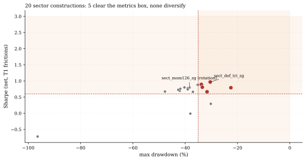
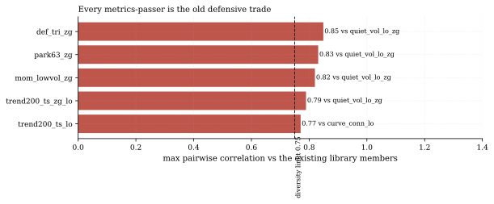
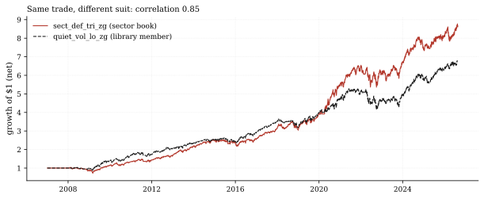

The one-paragraph version. The industry sells sector rotation as a diversifying sleeve; we finally tested the pure US sector cross-section with our own engine and the honest answer is: there is no second trade there. We built a 12-ticker sector book (the nine classic Select Sector SPDRs plus SPY/QQQ/MDY, daily since 2007) and ran 21 pre-registered constructions through realistic frictions. Five cleared every performance threshold - the best at Sharpe 0.97 with a -30% max drawdown - and all five failed our diversity rule at correlation 0.77-0.85 against defensive members we already hold. The sector book's alpha and the library's defensive tilt are the same trade wearing different suits.
How we worked this problem
Until this week, every equity strategy in our library ran on our 16-ETF mixed book (STRATEGY_LIBRARY.md's core panel) - bonds, gold, international, and only three sectors - which made pure sector rotation inexpressible: there was no sector cross-section to rank. So we built one (data/cache_sector_2007_2026.parquet): the nine classic Select Sector SPDRs including energy (XLE had never been fetched into any house book), plus SPY, QQQ and mid-cap MDY as market shells - all twelve predate the 2007 sample start, giving a clean sample with no stitched history. We pre-registered 18 constructions in five families before running anything (three canonical long/short cells joined via the disclosed amendment below - 21 in total): classic rotation (12-1 and 3-month sector momentum, long-only and long/short), per-sector trend following, defensive tilts, quality/carry tilts, and composites. Every cell ran through the funnel's own engine at T1 frictions ($100k account; 0.5bps commission + 3bps slippage + 50bps borrow, the T1 schedule in quantlab/backtest/frictions.py) with monthly re-formation (one pre-registered weekly variant), then faced the library's unchanged six-metric battery (thresholds frozen in STRATEGY_LIBRARY.md §battery) and the diversity rule: correlation below 0.75 against all 24 existing member streams. One process note for the record: the first execution clipped the trend cells' short legs (long-only-by-default), producing one structurally empty cell; we diagnosed it, re-ran both readings, and disclosed the whole episode in the pre-registration document rather than quietly overwriting it.
The data audit
| Source | Coverage | As-of | Role |
|---|---|---|---|
data/cache_sector_2007_2026.parquet | 12 tickers, daily OHLCV | 2026-08-21 | the sector book (all exhibits) |
data/loop/library_scratch/wave3_sector/*_T1.csv | 20 net-return streams | 2026-08-21 | wave-3 cells (metrics recomputed in this note, not quoted) |
data/loop/library/ + top-tier + crypto wave streams | 24 member streams | 2026-08-14 (equity) / 2026-08-18 (crypto) | the diversity-rule comparison set |
All metrics in this note - Sharpes, drawdowns, correlations, volatilities - are recomputed by this note's own script from the raw streams; the sweep's own JSON output is never quoted directly. Correlations are computed on overlapping dates with member streams re-indexed to each cell's dates.
The external read
The sector-rotation theme is a staple of ETF marketing: State Street packages it as a fund that "tactically allocat[es] among the GICS-defined sectors of the S&P 500" (XLSR product page), and practitioner guides name healthcare, utilities and staples as the defensive sectors that "hold up better when the economy weakens" (Thrivent). We cross-checked the defensive-leadership narrative circulating in August 2026 commentary ("utilities are outperforming the S&P 500", StockCharts) against our own book - and it does not hold: 2026 year-to-date XLU +0.4% vs SPY +12.7%, a -10.9% relative gap through 2026-08-21. The defensive trio's role in our results is about realized volatility and drawdown behavior over 19 years, not 2026 leadership.
Exhibits
Exhibit 1 - the metrics box is clearable; diversity is not. Five of the 20 evaluated constructions pass all six thresholds (Sharpe >= 0.60, Sortino
= 0.90, monthly win >= 0.52, vol <= 20%, max drawdown >= -35%, PnL > 0).
The best cell, a low-vol + parkinson + quiet-volume rank-sum composite with our VIX jump-state gate (sect_def_tri_zg), delivers Sharpe 0.97, Sortino 1.36, monthly win 0.63, and a -30.4% max drawdown - genuinely strong numbers. The classic rotation family fails next to it on the risk legs: 12-1 sector momentum with the same gate earns Sharpe 0.79 but a -38.3% max drawdown, and its long/short form is exactly flat (Sharpe -0.01) - nine sectors are too correlated for cross-sectional dispersion to pay.

Exhibit 2 - the diversity wall. Each metrics-passer's maximum correlation against the 24 existing library members sits between 0.77 and 0.85, above the 0.75 admission line - led by the composite at 0.85 against quiet_vol_lo_zg, our volume-stability defensive member from the 16-ETF book. The mechanism is visible in the book itself: the three lowest-volatility tickers across the full sample are exactly the defensive trio - XLP at 14.6% annualized volatility, XLV at 17.2%, XLU at 19.1%, versus 22.7% for consumer discretionary and 30.2% for energy. Any low-vol or quality tilt on this cross-section buys the same three sectors our mixed-book defensives already own the bond-and-gold version of.

Exhibit 3 - same trade, different suit. Overlaid equity curves of the sector composite and the library member it correlates 0.85 with: the drawdown dates line up stress for stress. This is what "one structural trade" looks like when you plot it - the major drawdowns (2008, 2020 and 2022 among them) arrive together in both books.

The trend-family footnote. Per-sector trend following only survives in its long-only-clipped form (long above the 200-day average, flat below): Sharpe 0.66, but 0.77 correlated with our curve-sensitivity member. The canonical long/short version - long each sector above its trend, short below
- earns Sharpe 0.30, and a 126-day Donchian breakout version loses badly
(Sharpe -0.72, max drawdown -96.4%): shorting sectors that are making 126-day highs through a two-decade bull market is a slow bleed.
So what - opportunities
- The sector book is a confirmation engine, not a new alpha source. It
- The book earns its keep as a monitoring surface. Nine clean sector
- For allocation work, the finding cuts cost: a sector-rotation sleeve
independently rediscovers the defensive rotation that already carries the library - out-of-family replication is real evidence the tilt is a market structure, not a 16-ETF artifact.
histories back to 2007 (energy finally included) upgrade our breadth and rotation diagnostics - the Rotation Monitor series now has a proper cross-section to watch.
is often marketed as diversification for a multi-asset book; on our numbers it would be a levered-up restatement of the defensive exposure already present. That is a reason not to pay for it twice.
So what - risks
- Correlation is regime-dependent. 0.85 is a full-sample average; in a
- The momentum result is a drawdown risk, not a dead signal. Sector
- Nine tickers is a thin cross-section. Tercile construction means
rates-driven drawdown that hits both bonds and defensives (2022's shape), the sector and mixed-book versions of "defensive" could de-diversify further. The battery's -35% drawdown ceiling (frozen with the other thresholds in STRATEGY_LIBRARY.md §battery) is calibrated on the mixed book, not this one.
momentum at Sharpe 0.79 with -38% drawdowns failed our thresholds, but an operator willing to size it down could still hold it - we just won't certify what fails our own risk legs.
three-name legs; idiosyncratic single-sector news (an FDA cycle in XLV, a rate case in XLU) moves these cells more than it would a 16-ETF book.
Machinery: how this piece was produced
articles/2026-08-22-nine-sectors-one-trade/analysis.py recomputes every number in this note from the sector book parquet, the 20 wave-3 net-return streams, and the 24 library member streams, then writes assets/numbers.json and the three figures (SVG + PNG twins). The sweep itself is experiments/run_library_wave3_sector.py (the funnel engine, T1 frictions); the book builder is experiments/build_sector_book.py; the frozen candidate list and full 21-cell results table are in docs/equity-sector-wave-prereg.md.
Reproduce with: ``bash .venv/Scripts/python experiments/build_sector_book.py .venv/Scripts/python experiments/run_library_wave3_sector.py .venv/Scripts/python articles/2026-08-22-nine-sectors-one-trade/analysis.py ``
Limitations
- yfinance daily OHLCV, survivorship-disclosed: the nine SPDRs exist today
- The diversity rule compares full-sample daily-return correlations; it does
- Frictions are T1 ($100k, 0.5bps commission + 3bps slippage, 50bps borrow -
- 21 cells is one wave, pre-registered and fully reported - but the
and all predate the sample, so listing survivorship is not an issue here, but adjusted-price revisions are (our core panel refresh is currently blocked by exactly that; this book was fetched fresh and ends 2026-08-21).
not test tail co-movement (see the 2022 risk above).
the quantlab/backtest/frictions.py schedule); the short legs the battery rejects would face more.
lifetime-searched count across the library program is now roughly 179 constructions (STRATEGY_LIBRARY.md disclosure 5b), and multiple-testing shrinkage applies to everything above.
Sources - external reading list
Full links for the three external claims discussed in "The external read" above: State Street US Sector Rotation ETF (XLSR), Thrivent - Sector ETFs Explained, StockCharts - Are Defensive Sectors Signaling Trouble?.
quantlab-loop-engine; battery-metrics; yfinance; matplotlib